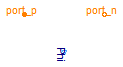
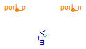
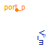

This package provides sensors for the magnetic potential difference and the magnetic flux in magnetic circuit.
Extends from Modelica.Icons.SensorsPackage (Icon for packages containing sensors).
| Name | Description |
|---|---|
| MagneticFluxSensor | Sensor to measure magnetic flux |
| MagneticPotentialDifferenceSensor | Sensor to measure magnetic potential difference |
| MagneticPotentialSensor | Sensor to measure magnetic potentiale |

Sensor for magnetic flux.
MagneticPotentialDifferenceSensor
Extends from Modelica.Icons.RotationalSensor (Icon representing a round measurement device), Modelica.Magnetic.FundamentalWave.Interfaces.PartialTwoPort (Two magnetic ports for graphical modeling).
| Type | Name | Description |
|---|---|---|
| PositiveMagneticPort | port_p | Positive complex magnetic port |
| NegativeMagneticPort | port_n | Negative complex magnetic port |
| output ComplexOutput | Phi | Complex magnetic flux from por_ p to port_n as output signal |
model MagneticFluxSensor "Sensor to measure magnetic flux"
extends Modelica.Icons.RotationalSensor;
extends Modelica.Magnetic.FundamentalWave.Interfaces.PartialTwoPort;
Modelica.SIunits.ComplexMagneticPotentialDifference V_m
"Complex magnetic potential difference";
Modelica.ComplexBlocks.Interfaces.ComplexOutput Phi
"Complex magnetic flux from por_ p to port_n as output signal";
equation
// Flux into positive port
port_p.V_m - port_n.V_m = V_m;
// Magneto motive force
port_p.Phi = Phi;
// Local flux balance
port_p.Phi + port_n.Phi = Complex(0,0);
// No magnetic potential difference at sensor
V_m = Complex(0,0);
end MagneticFluxSensor;

Sensor for magnetic potential difference.
Extends from Modelica.Icons.RotationalSensor (Icon representing a round measurement device), Modelica.Magnetic.FundamentalWave.Interfaces.PartialTwoPort (Two magnetic ports for graphical modeling).
| Type | Name | Description |
|---|---|---|
| PositiveMagneticPort | port_p | Positive complex magnetic port |
| NegativeMagneticPort | port_n | Negative complex magnetic port |
| output ComplexOutput | V_m | Complex magnetic potential difference between port_p and port_n as output signal |
model MagneticPotentialDifferenceSensor "Sensor to measure magnetic potential difference" extends Modelica.Icons.RotationalSensor; extends Modelica.Magnetic.FundamentalWave.Interfaces.PartialTwoPort;Modelica.ComplexBlocks.Interfaces.ComplexOutput V_m "Complex magnetic potential difference between port_p and port_n as output signal"; Modelica.SIunits.ComplexMagneticFlux Phi "Complex magnetic flux"; equation // Flux into positive port port_p.V_m - port_n.V_m = V_m; // Magneto motive force port_p.Phi = Phi; // Local flux balance port_p.Phi + port_n.Phi = Complex(0,0); // No magnetic flux through sensor Phi = Complex(0,0);end MagneticPotentialDifferenceSensor;

Sensor for magnetic potential difference.
Extends from Modelica.Icons.RotationalSensor (Icon representing a round measurement device).
| Type | Name | Description |
|---|---|---|
| output ComplexOutput | V_m | Complex magnetic potential |
| PositiveMagneticPort | port_p | Magnetic connector of sensor |
model MagneticPotentialSensor "Sensor to measure magnetic potentiale" extends Modelica.Icons.RotationalSensor;Modelica.ComplexBlocks.Interfaces.ComplexOutput V_m "Complex magnetic potential"; Interfaces.PositiveMagneticPort port_p "Magnetic connector of sensor"; equation // No magnetic flux through sensor port_p.Phi = Complex(0,0); // Magnetic potential V_m = port_p.V_m;end MagneticPotentialSensor;